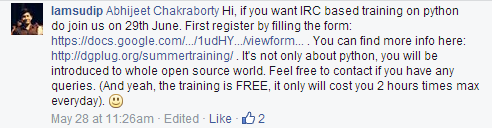

Well, at this time, most of you have guessed I'm going to talk about some sort of training, but what is exactly this "DGPLUG"? What is this training all about? Well, let me tell you my story.
So, it was when I was ultra-busy in my 4th semester exams, have no time to update even The Geeky Way (a blog I run to teach others what I know and to learn from others) , was searching some stuff, saw Facebook News feed for a moment and I think that was the best thing I've ever done with Facebook. I just came across a comment on a post by someone regarding learning Python. The person who commented was "IamSudip" whose comment read as follows:
So, what does DGPLUG stands for?
DurGaPur Linux User Group.
Well, my semester exams just started on 27, so already had given one exam, when I saw this post, I dropped down my books :P and started browsing more about DGPLUG Training and thought to give it a try.
As soon as my exams finished, I was pretty excited about all the stuff that would be going to happen. But it was sort of too late after the last exam. But I didn't loose hope and patience.
Finally, I get through the initial setup to know about IRC (Internet Relay Chat) and registering a Nick.
So, first time I logged into IRC, didn't get anything what was it all about. Finally, just search some basic stuff and got to interact with some people.
June 29, 2014 - When it all started.
So, I was online before the stipulated time, eagerly waiting for the training to be started.
Honestly, at first, I thought,
"Seriously, how would anyone learn just through a sort of text based chat?"
I mean there are Google Hangouts, and various other awesome stuff, which can be used to teach. Anyway, I started following what the mentors instructed. After just 2 classes, I was pretty much comfortable with IRC and other stuff they were teaching.
What I learned in this training till now?
Well, till this point of time, I've learned these these things:
- IRC etiquette
- rST (re Structured text)
- Linux FHS (File Hierarchy Standard)
- Basic Shell commands
To add to this, a recent class was all about "Blogging". Well I blogged for several years as of now, so I thought what would be extra I would get to know about Blogging?
Well, it was a developer specific Blogging. How blogging is really helpful for a developer, not only to just track his own performance, but it provides him a log at the end which he can use and others also get benefited from his posts.
Well, not only this but reading others interact on IRC is always fun and come to know across many hidden developer stuff in this world. Hidden because, there was no one to instruct, to guide me, when I first started with computers.
Even whatever I've learned till today about Programming or Web Development is just because of my own research on Internet, so sometimes, I might have missed some important things, which may be of intermediate or advanced level.
Well, to all those, who really wants to learn something, rather than mugging up those Engineering Books, and are already frustrated like me with the Engineering Syllabus (which tends to teach just some theory without any practicality and real life experience), I would say go for this course.
One good habit, you'll learn is to READ. Yes, Read as much as possible, because reading would get you better at stuff, and make you learn more about the things you're interested in.
When I see back in time, I regret , that I didn't found this training earlier. Because, I could've been learned quite a lot till now. But I'm also thankful that I found this training. Just co-incidentally I've landed up to something really good.
Lastly, I thank to these people :
- Kushal Das
- Armageddon
- Sayan
- rtnpro
and all other mentors and students too who are helping me to learn. Sorry if I missed some important name, I'm still trying to remember nicks :)
*So, at last, this training is actually which we should call Training in true sense!*
Not like the other ones which many of us do just for sake of some Certificates which are good for nothing. It's not about getting a job in the end, because if you don't know stuff, you may be placed in a company but they would surely kick you out after a month or so. It's about learning. Learning what you're interested in. Period.
PS: Thanks all mentors and students, and special thanks to Sudip whose comment bought me here :)
Regards
Sanyam Khurana (CuriousLearner)
Comments !